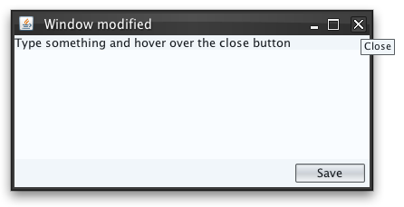
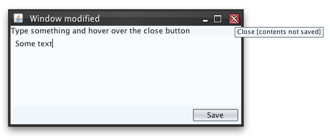

|
Description |
Client property name for specifying that contents of some frame, dialog,
internal frame, desktop icon or tab have been modified and not saved. The
property can be set on:
JInternalFrame - the
close button of the specific internal frame will be animated
(in case that the internal frame has decorated title pane). In addition,
once such internal frame is iconified (to a
JInternalFrame.JDesktopIcon),
the close button of the matching desktop icon is animated as well.JRootPane - the
close button of the title pane of the matching frame / dialog w
ill be animated (in case that the frame / dialog have decorated title
pane).JComponent in a
JTabbedPane. Based on the
SubstanceLookAndFeel.TABBED_PANE_CLOSE_BUTTONS_MODIFIED_ANIMATION
property presence, either the entire tab or its close button area is animated.
In this case, this property must be set on the tab component itself, not
on one of its child components.
The animation cycles between red, orange and yellow themes. In most cases
(all but tabs not marked with
SubstanceLookAndFeel.TABBED_PANE_CLOSE_BUTTONS_MODIFIED_ANIMATION
property), the animation will be visible only when the mouse hovers over
the close button of the matching container (frame, dialog, internal frame,
desktop icon, tab). The tooltip of the close button is changed as well to
reflect that the container contents are marked as modified.
|
|
Sample code |
import java.awt.BorderLayout;
import java.awt.FlowLayout;
import java.awt.event.ActionEvent;
import java.awt.event.ActionListener;
import javax.swing.JButton;
import javax.swing.JFrame;
import javax.swing.JLabel;
import javax.swing.JPanel;
import javax.swing.JTextPane;
import javax.swing.SwingUtilities;
import javax.swing.event.DocumentEvent;
import javax.swing.event.DocumentListener;
import org.pushingpixels.substance.api.SubstanceLookAndFeel;
import org.pushingpixels.substance.api.skin.BusinessBlackSteelSkin;
/**
* Test application that shows the use of the
* {@link SubstanceLookAndFeel#WINDOW_MODIFIED} client property.
*
* @author Kirill Grouchnikov
* @see SubstanceLookAndFeel#WINDOW_MODIFIED
*/
public class WindowModified extends JFrame {
/**
* Creates the main frame for <code>this</code> sample.
*/
public WindowModified() {
super("Window modified");
this.setLayout(new BorderLayout());
this.add(new JLabel("Type something and hover over the close button"),
BorderLayout.NORTH);
// create a text pane
JTextPane textArea = new JTextPane();
this.add(textArea, BorderLayout.CENTER);
textArea.getDocument().addDocumentListener(new DocumentListener() {
private void handleChange() {
// on any document change, mark root pane as modified
getRootPane().putClientProperty(
SubstanceLookAndFeel.WINDOW_MODIFIED, Boolean.TRUE);
}
public void changedUpdate(DocumentEvent e) {
handleChange();
}
public void insertUpdate(DocumentEvent e) {
handleChange();
}
public void removeUpdate(DocumentEvent e) {
handleChange();
}
});
JPanel buttons = new JPanel(new FlowLayout(FlowLayout.RIGHT));
JButton saveButton = new JButton("Save");
saveButton.addActionListener(new ActionListener() {
public void actionPerformed(ActionEvent e) {
// on button click, mark root pane as not modified
getRootPane().putClientProperty(
SubstanceLookAndFeel.WINDOW_MODIFIED, Boolean.FALSE);
}
});
buttons.add(saveButton);
this.add(buttons, BorderLayout.SOUTH);
this.setSize(400, 200);
this.setLocationRelativeTo(null);
this.setDefaultCloseOperation(JFrame.EXIT_ON_CLOSE);
}
/**
* The main method for <code>this</code> sample. The arguments are ignored.
*
* @param args
* Ignored.
*/
public static void main(String... args) {
JFrame.setDefaultLookAndFeelDecorated(true);
SwingUtilities.invokeLater(new Runnable() {
public void run() {
SubstanceLookAndFeel.setSkin(new BusinessBlackSteelSkin());
new WindowModified().setVisible(true);
}
});
}
}
The screenshot below shows the close button and its tooltip for
a frame that doesn't have this property set:

The screenshot below shows the close button and its tooltip for
a frame that has this property set to
Boolean.TRUE:

|